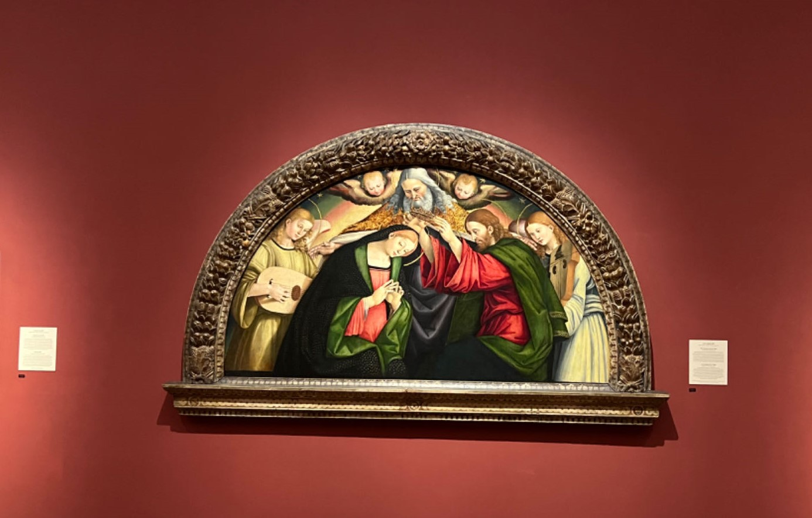
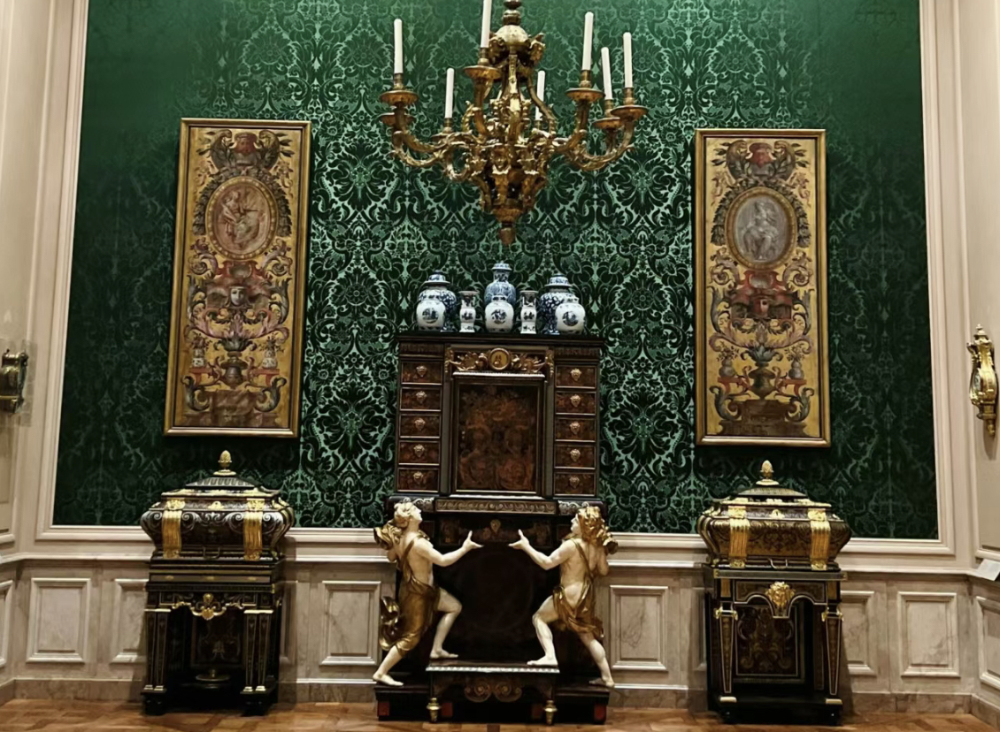
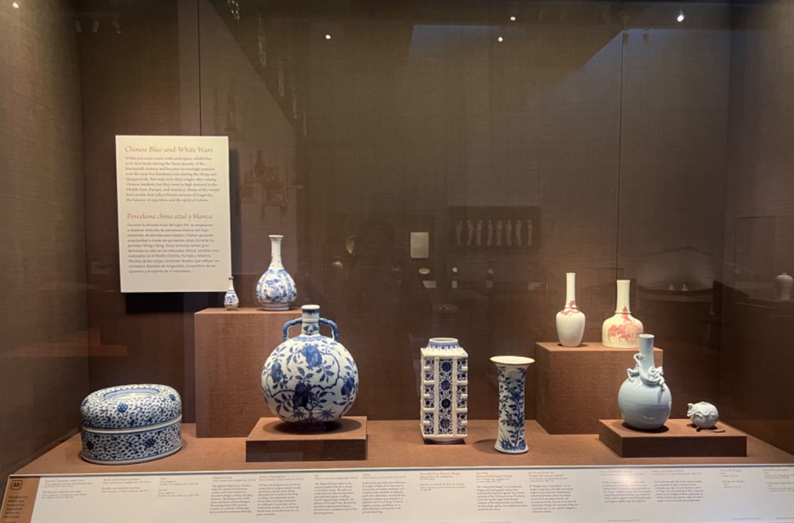
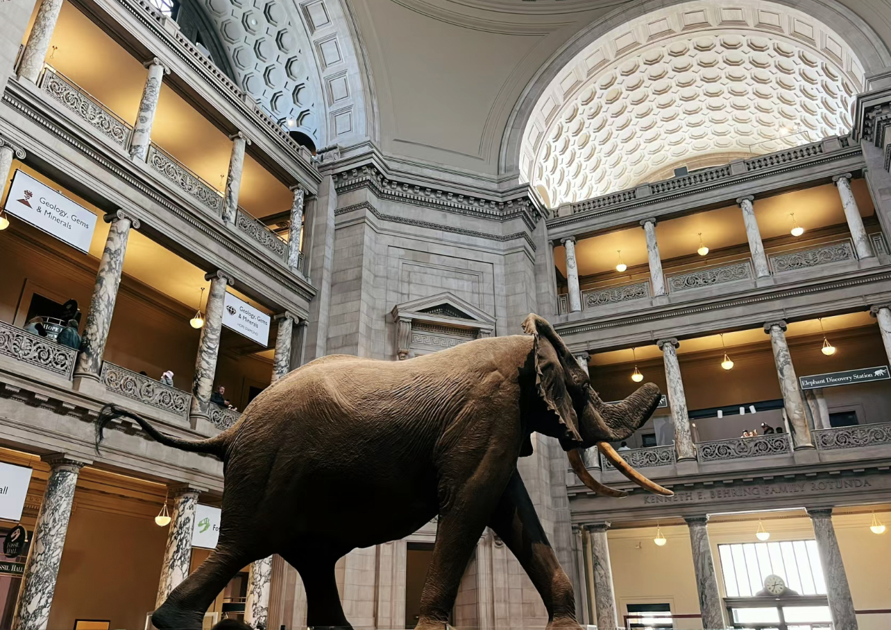
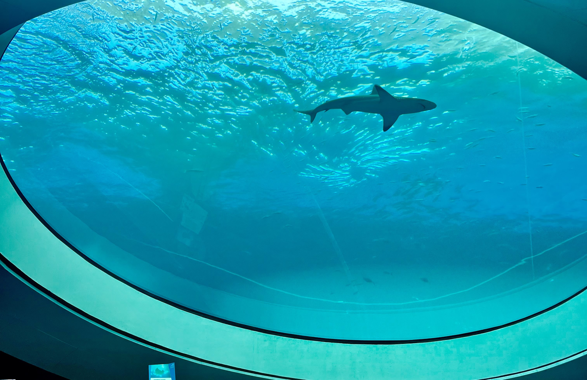
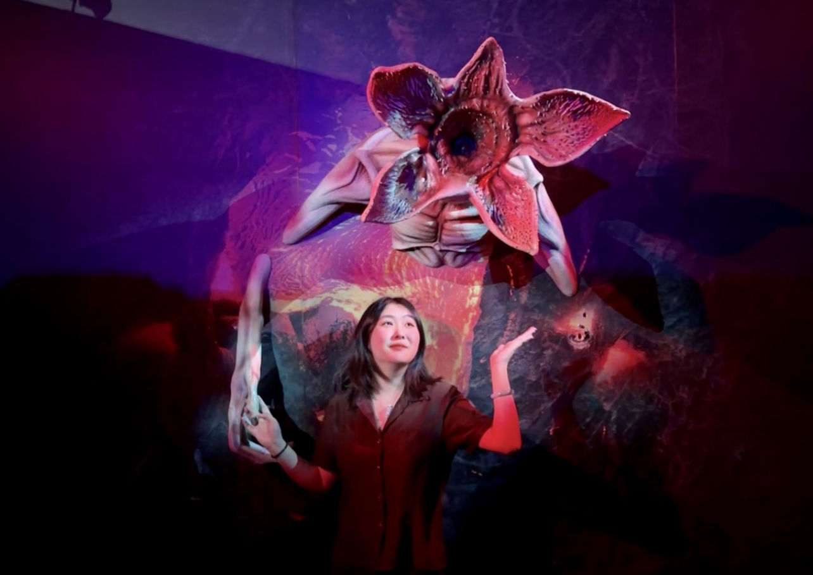

Welcome to the gallery showcasing the diverse array of museums I have visited. Each image captures a moment from my journey through these halls of history, art, and science, offering a glimpse into the rich tapestry of cultural heritage and innovation they represent. Hover over any image to delve deeper into the details of each exhibit, uncovering stories and insights that have shaped my understanding of the world. This collection is more than just a record of places visited; it's an invitation to explore the depth and breadth of human creativity and knowledge.

San Diego Art Museum
I went to the San Diego Art Museum in August 2023 and was captivated by its diverse collection of artworks spanning various genres and periods. From classical masterpieces to contemporary installations, the museum offered a rich tapestry of artistic expression. The exhibits were thoughtfully curated, providing insight into both local and global artistic movements. Navigating through the museum's halls was a journey through history and culture, leaving me inspired and enriched by the experience.

Getty Center
I went to Getty Center in May 2018, and the experience was truly captivating. Nestled amidst the hills of Los Angeles, the Getty Center boasts breathtaking architecture and stunning gardens. Exploring its renowned art collections, including masterpieces by Van Gogh and Monet, was an enriching journey through history and culture. The panoramic views of the city from the center's terraces added an extra layer of beauty to an unforgettable visit.
San Diego Midway Museum
I went to the San Diego Midway Museum in December 2013, eager to explore its rich maritime history. Docked in downtown San Diego, the museum offers a captivating journey aboard the USS Midway, a retired aircraft carrier turned museum. As I stepped aboard the massive vessel, I was immersed in the stories of its service during World War II, the Cold War, and Operation Desert Storm. From the sprawling flight deck to the cramped crew quarters, every corner of the USS Midway revealed the bravery and dedication of those who served aboard her.

Natural History Museum of LA
I went to the Natural History Museum of LA in Dec. 2020 and was immediately captivated by its vast collection spanning millions of years of natural history. From towering dinosaur skeletons to intricate exhibits on biodiversity, the museum offered a fascinating journey through Earth's evolutionary past. The interactive displays and immersive experiences made learning about topics like paleontology and ecology engaging for visitors of all ages. It was a memorable exploration of our planet's rich and diverse heritage.

Nation Museum of Natural History
I went to the National Museum of Natural History in December 2020 and was captivated by its extensive exhibits showcasing the wonders of the natural world. From towering dinosaur skeletons to intricate mineral collections, the museum offered a fascinating journey through Earth's history and biodiversity. The interactive displays and informative presentations made learning about topics like evolution and ecology engaging and accessible to visitors of all ages. It was a memorable experience that left me in awe of the beauty and complexity of our planet's natural wonders.

Miami Frost Museum of Science
I went to the Miami Frost Museum of Science in February 2024, and it was a captivating experience. Exploring its interactive exhibits and immersive displays provided a fascinating journey through various scientific disciplines. From the mesmerizing planetarium shows to the hands-on experiments, the museum offered an engaging environment for both learning and enjoyment. The innovative approach to science education at the Frost Museum left a lasting impression, making it a must-visit destination for anyone with a curiosity about the world around us.

Stranger Things Theme Museum
I went to the Stranger Things Theme Museum in January 2024; situated in Las Vegas, it's a captivating homage to the popular TV show, Stranger Things. Upon entering, visitors are immersed in the nostalgic ambiance of the 1980s, reminiscent of the show's setting. The museum showcases iconic props, detailed replicas of sets, and interactive exhibits, offering fans a chance to delve deeper into the supernatural world of Hawkins, Indiana. It's a must-visit destination for enthusiasts seeking to relive the magic of the Upside Down.
Las Vegas Mob Museum
I went to the Las Vegas Mob Museum in January 2024, and it offered a captivating journey into the city's infamous mob history. The museum's exhibits vividly portrayed the rise and fall of organized crime in Las Vegas, showcasing artifacts, interactive displays, and multimedia presentations. Exploring the museum provided a deep insight into the fascinating yet turbulent past of this iconic American city, leaving a lasting impression on visitors.